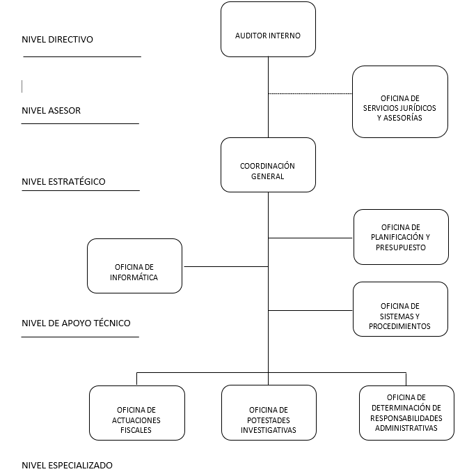

RESEÑA HISTORICA
La Unidad de Auditoria Interna de la Gobernación del Estado Mérida, fue creada según decreto Nº 064, publicado en Gaceta oficial del Estado Nº574 de fecha 26 de Mayo de 2003, como parte integrante del Sistema Nacional de Control Fiscal y como un mecanismo que permitiría optimizar las labores de control interno para poder determinar las debilidades de los procesos y establecer responsabilidades en caso de manejo incorrecto de recursos por partes de los encargados. En ese mismo año, la Contraloría General del Estado Mérida emitió la Resolución Nº 78, publicado en Gaceta Oficial Nº 587 DE FECHA 01 DE Julio 2003, en la cual se abstenía de practicar las actividades de Control Previo, en los Entes sujetos a su control, vigilancia y fiscalización pertenecientes a la Gobernación del Estado Mérida, como ente centralizado del Ejecutivo Regional. Para lo cual, indicaba que le correspondía a la máxima autoridad de la Gobernación del Estado, adecuar el Sistema de Control Interno a la naturaleza, estructura y fines del ente, de manera que correspondiera un plan de Organización, Políticas y normas así como métodos y procedimientos que garantizaran el cumplimiento de los requisitos establecidos en el Artículo 38 de la Ley de la Contraloría General de la Republica y del Sistema Nacional de Control Fiscal. Es por ello, que desde el punto de vista de Control Previo le correspondería ejecutarlo a la Administración activa y de Control Posterior le correspondería a la Unidad Interna. Posteriormente, según Decreto Nº 110, publicado en Gaceta Nº 590 de fecha 02 de Julio de 2003, se instauro el Control Interno de la Gobernación del Estado Mérida, siendo un sistema integrado por el Control Previo que lo ejercería la Dirección de Administración y el Control Posterior que lo efectuaría la Unidad de Auditoria Interna de la Gobernación de Estado.
MISION
Velar por el cumplimiento de las leyes, disposiciones, reglamentos y demás normas que sean de aplicación en las Dependencias Centralizadas de la Gobernación del Estado Mérida, evaluando y fortaleciendo el sistema de control interno, planes, programas, procedimientos administrativos y operaciones establecidas en estas, a fin de garantizar la adopción de medidas encaminadas hacia una gestión administrativa transparente, eficiente, eficaz y económica; a través del examen posterior, objetivo y sistemático; y a su vez apoyar a gestión gubernamental.
VISION
Ser una Unidad honesta, justa, imparcial, objetiva y transparente, reconocida como un órgano fiscalizador de excelencia, que coadyuve a un correcto manejo de los recursos propiedad del Estado, siempre basado en el cumplimiento de las normativas legales vigentes, así como velar por el cumplimiento cabal de las funciones de los empleados públicos adscritos a la Gobernación del Estado Mérida.
OBJETIVO GENERAL
Examinar de manera objetiva, sistemática y profesional las actividades administrativas y financieras de los Órganos centralizados y desconcentrados sujetos a su control, con el fin de evaluar y verificar sus operaciones, plasmar hallazgos, conclusiones y recomendaciones en los informes respectivos, así como, determinar las responsabilidades administrativas a que hubiere lugar, bajo la rectoría de la Contraloría General de la República.
OBJETIVO ESPECIFICO
- Ejercer el control de los ingresos, egresos, derechos, obligaciones y bienes públicos, así como de, los actos, operaciones y actividades relacionadas o inherentes a estos.
- Realizar actuaciones de examen y control posterior de actividades y operaciones presupuestarias, administrativas, financieras y de gestión.
- Evaluar el grado de operatividad y eficacia de los sistemas de administración e información.
- Evaluar la eficiencia, eficacia, economía, calidad e impacto de las operaciones presupuestarias, administrativas, financieras y de gestión.
- Proponer recomendaciones orientadas a la optimización e incremento de la eficacia y efectividad de la gestión administrativa, presupuestaria y financiera.
- Verificar la legalidad, exactitud, sinceridad y corrección de operaciones, presupuestarias, administrativas, financieras y de gestión.
- Evaluar el cumplimiento y resultados de las políticas, así como, las acciones administrativas respecto de su eficacia, eficiencia, economía, calidad e impacto de gestión.
- Realizar seguimiento a las recomendaciones establecidas en los informes de auditoría y de cualquier actividad o actuación de control fiscal.
- Realizar valoración jurídica de los informes de las actuaciones fiscales.
- Ejercer la potestad de investigación administrativa.
- Ejecutar los procedimientos administrativos para la formulación de reparos, declaratoria de responsabilidad administrativa e imposición de multas.
- Tramitar denuncias vinculadas con la comisión de actos, hechos u omisiones contrarios a una disposición legal o sub legal relacionados con la administración manejo o custodia de recursos públicos.
- Realizar el examen selectivo o exhaustivo, así como la calificación y declaratoria de fenecimiento de las cuentas de ingresos, gastos y bienes públicos.
- Verificar las cauciones presentadas por los funcionarios y empleados públicos encargados de la administración y liquidación de ingresos o de la recepción, custodia y manejo de fondos o bienes públicos.
- Verificar la sinceridad y exactitud de las Actas de Entrega de los órganos o unidades administrativas centralizadas y desconcentradas.
ESTRUCTURA ORGANIZATIVA DE LA UNIDAD DE AUDITORÍA INTERNA
{kind=link}
DIRECTORIO
| Nº | APELLIDOS | NOMBRES | CARGOS |
|---|---|---|---|
| 1 | Calderón | Carlos Eduardo | Auditor Interno |
| 2 | Salas Mora | Eneida | Jefe de la Oficina de Servicios Jurídicos Y Asesorías |
| 3 | Mendoza Sánchez | Noemí | Coordinadora General |
| 4 | Durán Ruíz | Ana Margarita | Jefe de la Oficina de Planificación y Presupuesto |
| 5 | Castro Quintero | Daniel Rolando | Jefe (E) de la Oficina de Informática |
| 6 | Pineda Contreras | Anthony Jesús | Jefe de la Oficina de Sistemas y Procedimientos |
| 7 | Márquez Moreno | Willy Yohan | Jefe de la Oficina de Actuaciones Fiscales |
| 8 | Santiago Rendón | Doris Lorena | Jefe de la Oficina de Potestades Investigativas |
| 9 | Cáceres Cabeza | Luis Rodrigo | Jefe de la Oficina de Determinación de Responsabilidades Adm. |